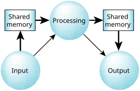

Depending on the volume of data flow, we may want to optimize the communication path.
The easiest way of doing this is to make the coupling between the three processes tighter. Instead of using a general-purpose connection-oriented protocol, we now choose a shared memory scheme (in the diagram, the thick lines indicate data flow; the thin lines, control flow):

In this scheme, we've tightened up the coupling, resulting in faster and more efficient data flow.
We may still use a general-purpose
connection-oriented protocol to transfer control
information around—we're not expecting the control information to consume a lot of bandwidth.